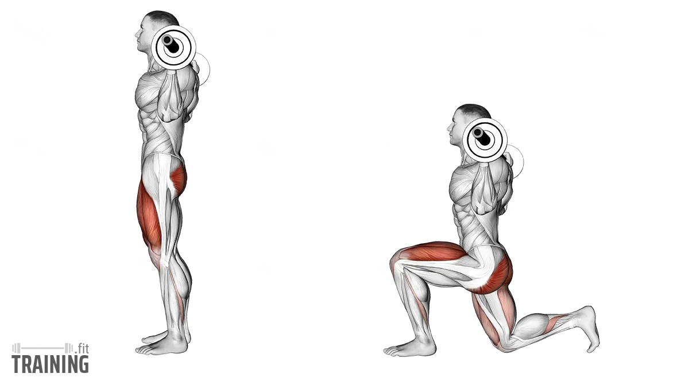
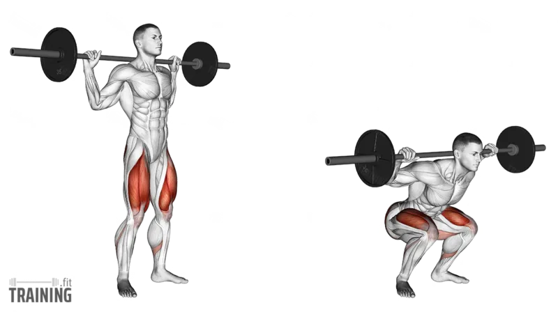
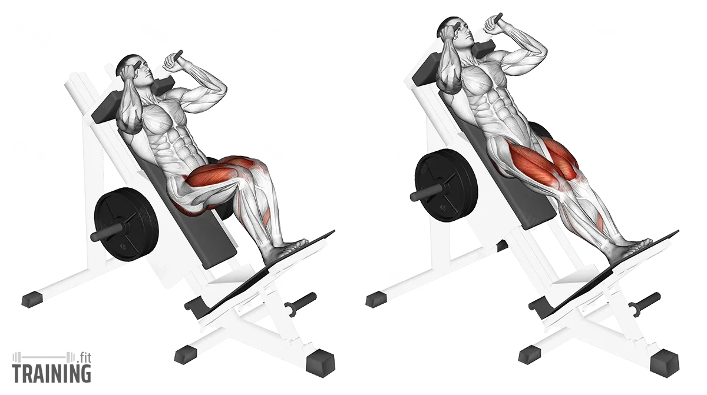
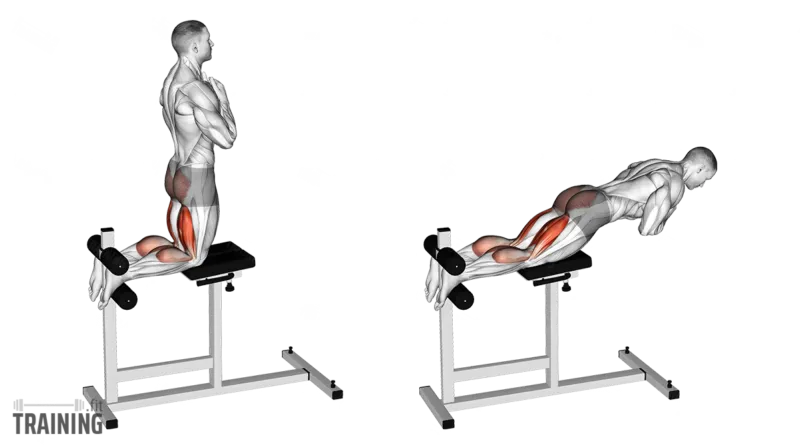
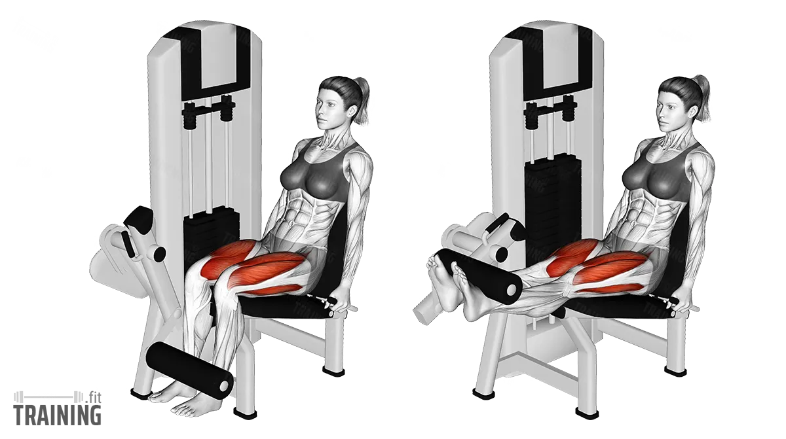
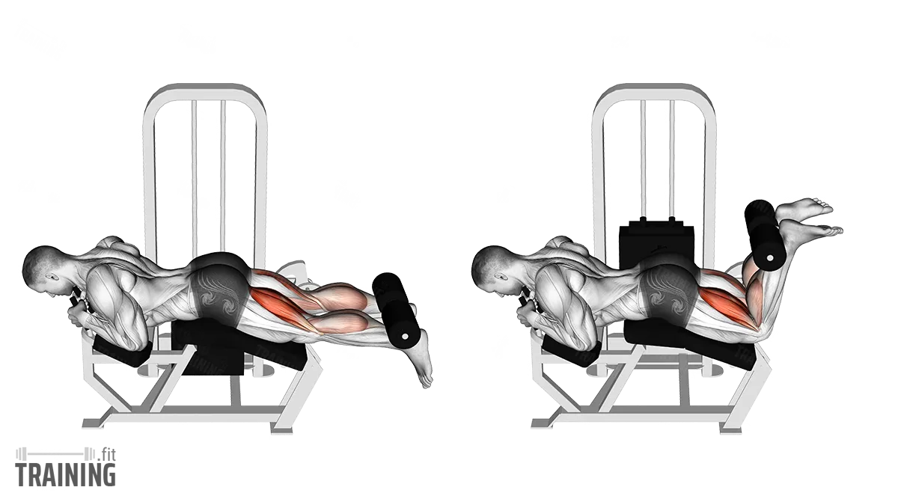
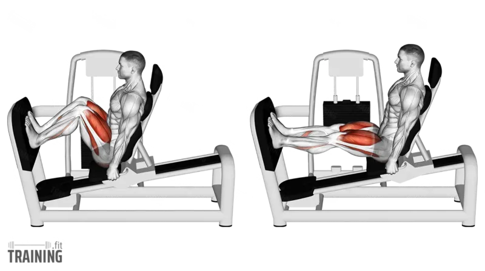
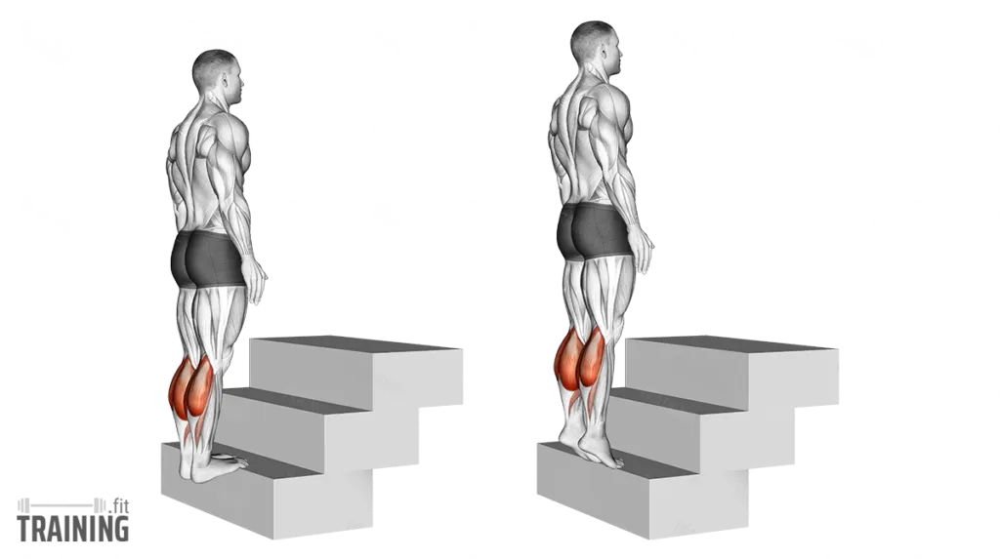

|  |
Lunges |
Quadriceps, Gluteus Maximus |
Barbell'i trapez kaslarınızda tutarak bir ayağınızı ileriye atın, dizlerinizi bükerek arka dizinizi yere yaklaştırın, ardından başlangıç pozisyonuna dönün. |
Sırtınızı dik tutun, dizinizi ayak parmaklarının önüne geçirmeyin ve hareket sırasında dengeyi koruyun. |
|  |
Squat |
Quadriceps, Hamstrings |
Barbell'i trapez kaslarınıza yerleştirip ayaklarınızı omuz genişliğinde açın, kalçanızı geriye doğru itip dizlerinizi bükerek çömelin ve ardından kontrollü bir şekilde başlangıç pozisyonuna kalkın. |
Sırtınızı düz ve güçlü tutun, dizlerinizi ayak parmaklarının önüne geçirmeyin ve topuklarınızı yere sabit tutun. |
|  |
Hack Squat |
Quadriceps |
Hack squat makinesine sırtınızı yerleştirin, ayaklarınızı platforma omuz genişliğinde yerleştirin, dizlerinizi bükerek platformu aşağı doğru indirin ve ardından başlangıç pozisyonuna itin. |
Sırtınızı makineye sabit tutun, dizlerinizi ayak parmaklarınızın önüne geçirmeyin ve hareketi kontrollü bir şekilde gerçekleştirin. |
|  |
Hanging Leg Curl |
Hamstrings |
Bir barfiks demirine tutunarak kollarınızı düz tutun, bacaklarınızı dizden bükerek topuklarınızı kalçanıza yaklaştırın ve kontrollü bir şekilde başlangıç pozisyonuna dönün. |
Vücudunuzu sabit tutarak sallanmaktan kaçının ve hareketi kontrollü bir şekilde gerçekleştirin. |
|  |
Leg Extension |
Quadriceps |
Leg extension makinesine oturun, ayaklarınızı platforma yerleştirin ve bacaklarınızı düzleştirerek ağırlığı yukarı kaldırın, ardından kontrollü bir şekilde başlangıç pozisyonuna indirin. |
Hareket sırasında dizlerinizi kilitlemekten kaçının ve kontrollü bir tempoda yaparak eklemleri zorlamayın. |
|  |
Lying Leg Curl |
Hamstrings, Gluteus Maximus |
Lying leg curl makinesine yüzüstü uzanın, ayaklarınızı platformun altına yerleştirin, dizlerinizi bükerek topuklarınızı kalçanıza doğru çekin ve kontrollü bir şekilde başlangıç pozisyonuna indirin. |
Hareket sırasında kalçanızı ve gövdenizi sabit tutarak belinize aşırı yüklenmekten kaçının. |
|  |
Leg Press |
Quadriceps, Hamstrings |
Leg press makinesine oturun, ayaklarınızı platforma omuz genişliğinde yerleştirin. Dizlerinizi bükerek platformu kontrollü bir şekilde indirin ve ardından topuklarınızı kullanarak ağırlığı yukarı itin. |
Dizlerinizi kilitlemekten kaçının, sırtınızı makineye sabit tutun ve hareket sırasında kontrolü kaybetmemeye özen gösterin. |
|  |
Calf Raises |
Gastrocnemius, Soleus |
Ayak parmaklarınız bir platformun üzerinde, topuklarınız dışarıda olacak şekilde durun. Ayak parmaklarınızın üzerinde yükselin, ardından topuklarınızı kontrollü bir şekilde aşağı indirin. |
Hareketi tam bir aralıkta yaparak baldır kaslarınızı tamamen çalıştırın ve dengeyi korumak için kontrollü bir tempoda uygulayın. |